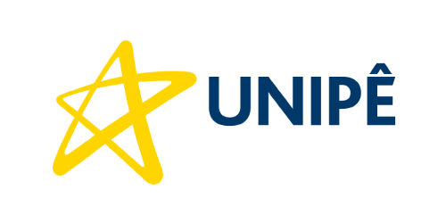
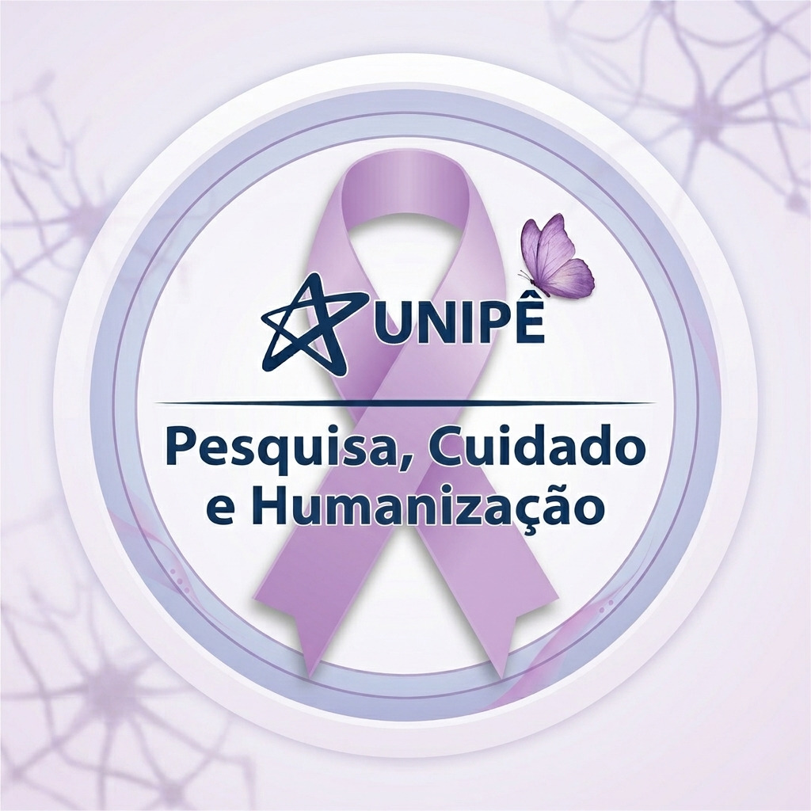

Convite para participar da pesquisa: Você está sendo convidado(a) a participar da pesquisa intitulada "Conhecimento de estudantes de graduação sobre o manejo da fibromialgia em um centro universitário na Paraíba"[cite: 3].
Objetivo do Estudo: Analisar o conhecimento de estudantes dos cursos de graduação em Enfermagem, Medicina, Fisioterapia e Psicologia sobre o manejo terapêutico da Fibromialgia, visando subsidiar melhorias pedagógicas e qualificar a assistência integral no SUS[cite: 3, 5].
Procedimentos: Caso aceite participar, você responderá a este formulário eletrônico estruturado (duração aproximada de 10 minutos), contendo questões sobre seu perfil e conhecimentos clínicos acerca da fibromialgia[cite: 3, 8].
Riscos e Benefícios: Os riscos são mínimos (leve fadiga temporária). Como benefício, o estudo ajudará a mapear lacunas acadêmicas e fortalecer o ensino interprofissional voltado à dor crônica[cite: 5].
Sigilo e Confidencialidade: Sua participação é voluntária e anônima. Os dados consolidados serão utilizados estritamente para fins científicos, sem exposição de identidades.
Aspectos Éticos: A pesquisa está em conformidade com as diretrizes das Resoluções nº 466/2012, 510/2016 e 580/2018 do CNS e da Lei Federal nº 15.176/2025[cite: 3, 8].